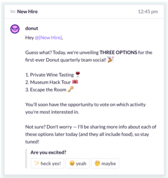
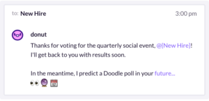
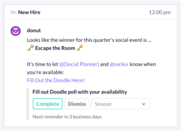
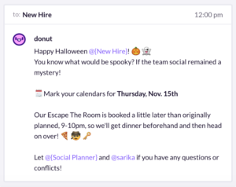

When it comes to figuring out our culture, our team has been very proactive about making sure it’s a collaborative process. Rather than having a few people in charge of determining what our team norms should look like, we’re finding creative ways to get everyone actively involved. This has been beneficial to our team in a few different ways. The most striking is probably that culture begins to feel a lot less like an abstract idea, and instead becomes something we participate in and can see changing as our team grows.
Recently, we made the decision to start hosting a quarterly team social event. There were no specifications given around how this should be planned or what it should look like. In fact, the only concrete detail was that someone on the team would volunteer each quarter and own planning it for the rest of the team. We were free to get creative, as long as the event was within budget.
As the newest employee at Donut, you might expect me to have shied away from volunteering to plan the first big team social, but I feel really strongly about the benefits of having team social events at any company. In every job I’ve held, I’ve planned at least a small social gathering at one point or another. These are the times that I’ve learned new things about both myself and my teammates. From finding shared hobbies to learning coworkers’ personal histories, I truly believe having time outside of your regular workday with your colleagues helps you relate and see each other in a new light. So I volunteered to plan the first one and decided to dive head first into helping build our team culture.
“I truly believe having time outside of your regular workday with your colleagues helps you relate and see each other in a new light.”Courtney Stratton
Donut, Customer Experience & Success
A few days into brainstorming ideas for an activity that would (hopefully!) be enjoyable for the whole team, I decided to ask my coworker, Sarika, if she’d like to jump in and help. I saw this as an opportunity to work side by side with someone who I don’t often work with on a daily basis since she’s on the engineering team and I’m on the customer team. Fortunately, she agreed and we started researching options.
We quickly came up with a few exciting ideas but found ourselves stuck at the next step: unsure if we should email everyone, create a survey, have the team read about each option on their own and then vote via email, put it to an in-meeting vote by show of hands, etc. There were a ton of different ways we could have executed the next phase of planning, but we soon realized the most obvious solution was right in front of our noses: Donut (or maybe we just really like the scent of sweet doughy treats). So, we decided to use Donut for Onboarding to deliver all of the pertinent information and collect feedback on what the team wanted to do most.

Not only was this a great way to streamline the process of planning and collecting feedback for a team event, but it also allowed us to spend more time on the important parts of planning like logistics and booking the location, rather than trying to determine how we should share out information with the team. Normally when planning an event like this, I’d probably have relied heavily on email to communicate with the team about the details of each option (time, location, pros/cons etc). This would have meant dumping a ton of information on everyone at once and following up manually until I felt like I was herding cats.
We had narrowed the options down to three: a private wine tasting, an escape the room, or a group tour at one of the local museums. After thinking through what information would be most helpful to our teammates in order for them to pick a favorite option, we broke everything into bite-size bits, plugged it into Donut to be delivered over the course of several days, and then we took turns editing the text until we agreed we had gotten the voice, tone, and playfulness just right. This was a team social after all, so we wanted it to feel fun and lighthearted.

Our process eliminated the need to send follow up emails or chase down feedback. Best of all, we didn’t feel like all the weight was on our shoulders to keep the team excited and engaged as we were planning. Donut did most of the heavy lifting for me by making sure the team got messages and reminders about the event, while we were able to go about our week and respond to questions as needed.
As we approached the day the team would vote, we dropped a few clues and updates to keep the team social top-of-mind. The result? Everyone was genuinely excited to cast their vote for their favorite activity, and within a few days, Donut had collected all of the votes and determined the winner for us.
“I loved getting team social reminders this way. It kept us informed throughout the whole process and it was really nice to get smaller pieces of information and nudges throughout the week. The prompts from Donut and pacing of the messages kept the tasks we needed to complete from being overwhelming or easily forgotten.”Will Johnson
Donut, Engineering
Donut ultimately enabled us to execute on this team social in a light-weight and stress-free way. It helped us share our ideas for the social, collect feedback on what people wanted to do, and now we’re using it to send reminders ahead of the event.
We’ve even built in feedback collection that will automatically send after the social to be sure we understand whether or not it was a success. We’re confident that Donut will keep us on track for the social as we near the date, so all we have to do now is escape from an intricately locked room together…
Streamline team-building activities with Donut.